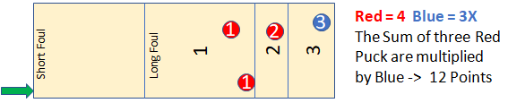

How to Play Three Strikes:
Each person will shoot 4 pucks - 3 of one color, and 1 of the other
color. The 3 same colored (red) pucks are your "Point" pucks and the
single color puck (blue) is your "Multiplier". The multiplier does
not count for any points and can be thrown at any time during your
turn. Players must shoot all pucks past the long foul line to count.
All point values are the same as regular knock-off play (hanger is
4 points). The players will shoot from which ever end the pucks are
on, so if there is an uneven number of players, you would have to
shoot from different sides of the table each time.
After the first player's turn is over, count up all the points and
that is the score the 2nd player has to beat - no ties. If the second
player does not beat this score he gets one strike and whatever he
scored is what the third player has to beat and so on. The point
total you are trying to beat is always the player in front of you,
whether they got a strike or not. If you get 3 strikes, you are out
and the remaining players continue to play until only one person is
left who has not received 3 strikes.
In the below diagram, the points total 12, with the blue puck being
the multiplier. So the next player must score 13 points. If they
score anything less than 13, say 4, they get a strike and the third
player is up. The third player must score 5 or more points or they
will also get a strike.
